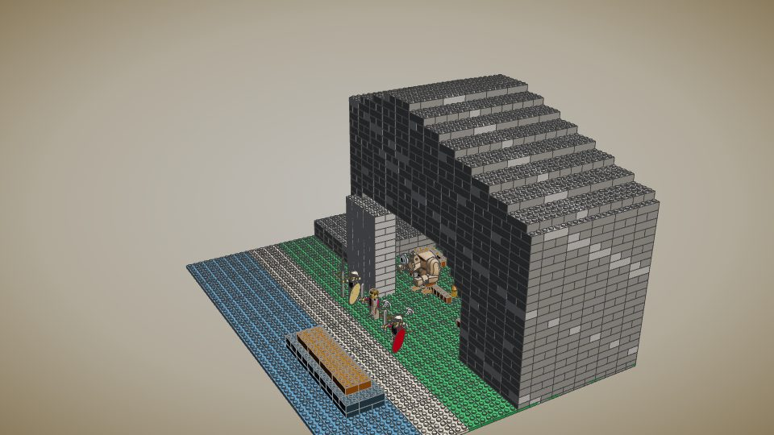
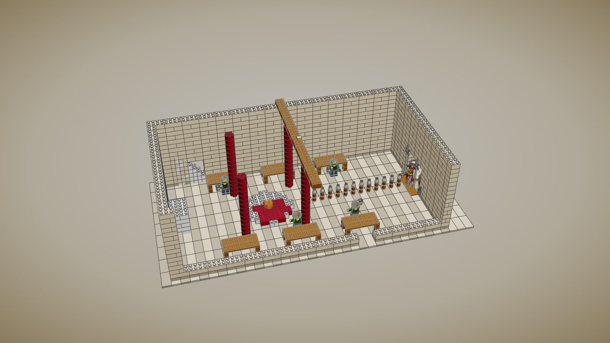
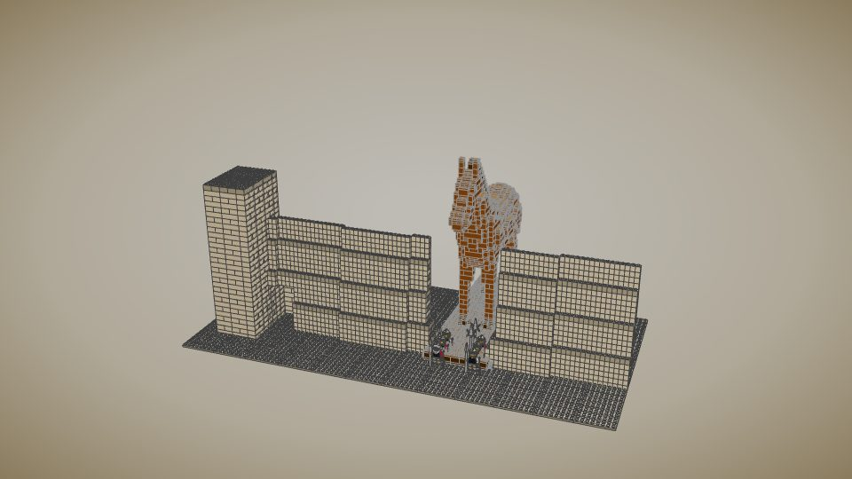
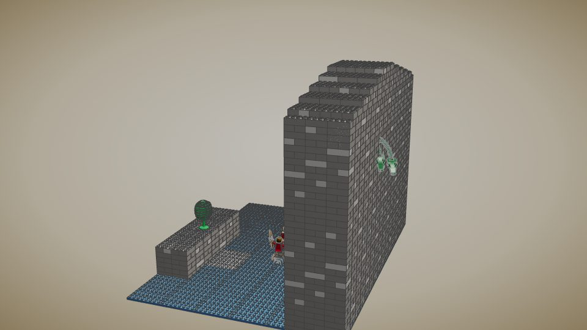

The Odyssey Line
What people will want to build, and why: kits made around the moments of the poem, not the places. Each one big enough to hold its action, with one mechanism that re-enacts it, figures you can't get anywhere else, and a look no other line has, because it is drawn from the Bronze Age the poem remembers and not from the marble Greece of a later age.
Five rules
- The moment, then the room. Every flagship is sized from its beat: the hall is as long as the line of twelve axes and the bowshot needs; the cave as deep as a giant, a flock and a fire; the strait as tall as Scylla's reach.
- One mechanism that tells the story. The door-stone rolls shut on the cave; the great doors of the hall swing closed; the horse rolls up the ramp and its flank lifts off; the whirlpool turns; the side wall lifts out so the camera and the child can go in.
- The Bronze Age, not the Parthenon. Cyclopean masonry, the leaning saw-toothed walls of Troy VI, red columns that taper downward, fresco palettes of ochre, red and Egyptian blue, pithos magazines, boar's-tusk helmets, figure-eight shields, ships with bird-head prows. This is the look that makes the line its own.
- Scale is the world's. A minifigure is a person of 1.75 m: a course 0.44 m, a stud 0.37 m. The horse is 15 m; everything is sized to stand beside it.
- Every part clicks. Nothing floats, nothing passes through anything; the checker proves it for every build.
The Ideas bar
What the approved projects share. The Old Man and the Sea, approved from the 2025 review in April 2026, is about 1,300 pieces: a literary scene split into the boat, the marlin and the sea, each of which stands on its own, the fish caught at the height of its fight. LEGO Ideas takes a submission of 200 to 5,000 pieces, one concept, a main model with a few smaller supporting builds. Held to that:
- Under 5,000 pieces, aiming for 2,500 to 4,000. The first Cyclops' Cave was 5,851 and could not have been submitted; it is now 3,215.
- One concept: a main model and a supporting build that each stand alone, and join into one diorama.
- The peak of the story, posed. Not the cave, but the stake going into the eye; not the hall, but the bow drawn on the threshold.
- Finished surfaces. No rock or wall is a field of bare studs: tiles on the flat, cheese slopes off every edge, studs only where something stands.
- Texture from real parts: strata of dark tan in the grey, moss in patches with plants growing from it, water of mixed blue and clear tiles with foam.
- A play feature that works, and a nameplate on the base.
- Proven: every part clicks to the studs below, and no two parts fill the same space.
tools/forage/product/clicks.pynow checks both.
Held to that last line, the earlier Troy and Ithaca modules do not yet pass. Their first checker was looser, and the strict one finds parts that do not click (81 in the Great Hall) and parts that pass through each other (807 pairs in the hall, 366 in the Scaean Gate). They are rebuilt to the bar as their flagships come up, starting with the Hall at the Slaughter.
A correction
The Temple of Athena I built for Troy is a Classical peripteral temple, eight centuries too late for the city of the war. Troy VI and VIIa had no marble colonnades: their sanctuaries were megaron-shaped shrines inside the citadel, their walls sloping limestone with vertical offsets, their houses mudbrick on stone footings. The next pass on Troy rebuilds it that way (the blockout below is the start), and keeps the white temple only as what it is: a later dream of Troy.
The flagships, blocked out
Grey massing models: rock in grey, masonry in its colour, water in blue, with the story's real props and minifigures for scale
(tools/forage/product/blockouts.js). Each is the composition before the detail.

The Cyclops' Cave
The moment: the escape at dawn, each man slung under a ram, the blinded giant at the door feeling their fleeces.
- A headland 13 m high with a vault 6 m high and 13 m deep cut into it; its east side lifts off
- Mechanism: the door-stone that "twenty-two waggons could not draw" slides shut on its track
- Inside: the fire and the olive stake heating in it, the pens of ewes and lambs, milk pails and cheese racks, Polyphemus
- Below: the beach and the black ship, bow to the shore, for the boulder he throws
- Figures: Polyphemus, Odysseus and three companions, three rams with a man clinging under one

The Hall at the Slaughter
The moment: Odysseus strips off his rags and leaps to the threshold with the bow; the doors are shut; the suitors are behind their tables.
- A long megaron, 11 by 22 m inside: longer than Pylos because the story's axis needs it: threshold, twelve axes, hearth, high seat
- Mechanism: the great doors swing shut and bar; the tables tip to become shields; the side wall lifts out
- The stair to the storeroom Melanthius runs up for the arms; the side door; a gallery where the women watch
- Athena sits on the roof-beam as a swallow, as she does in the poem
- Figures: Odysseus in rags and armour, Telemachus, Eumaeus, Philoetius, Antinous with his cup, Eurymachus, the suitors

The Walls of Troy
The moment: the city tearing down its own wall to haul the horse in.
- Troy VI as it was dug: a limestone wall that leans back as it rises, stepping out every ten metres in its saw-tooth offsets
- A great tower; the gate made tangential, the road running along the wall between two overlapping ends
- The breach, and the ramp up to it; mechanism: the horse rolls on its cart, hauled by Trojans on ropes
- Joins the Wooden Horse, and the citadel behind it

Scylla and Charybdis
The moment: the ship in the strait, the crew watching Charybdis suck down the sea, as Scylla's six heads come down from the other side.
- A vertical set: a smooth cliff 18 m tall, Scylla's cave high in it; across the channel a low rock with the great fig tree
- Mechanism: Charybdis turns (a turntable of rings), and the necks swing down on hinges
- The ship with its crew at the oars; Odysseus in armour on the deck, a spear in each hand, as he tells it
- Still to block: the cave mouth, the whirlpool in view, the ship's sail
The whole line
| Tier | Kit | The moment | Mechanism | State |
|---|---|---|---|---|
| Flagship | The Wooden Horse | The horse left for Troy; the Greeks inside | Rolling cart, flank lifts off | Built |
| Flagship | The Walls of Troy | The city breaks its wall to haul the horse in | The horse hauled up the ramp | Blocked out |
| Flagship | The Cyclops' Cave | The escape under the rams | The flank lifts off; the door-stone rolls | Built to the bar, 3,215 pieces; the stone track to come |
| Flagship | The Hall at the Slaughter | The bow, the axes, the doors shut | Doors close, tables tip, wall lifts out | Blocked out; the palace modules built |
| Flagship | Scylla and Charybdis | Between the monster and the whirlpool | Whirlpool turns, necks swing | Blocked out |
| Large | Circe's House | Men turned to swine; Hermes and the moly | Heads swap to pigs' in the sty | To block |
| Large | Calypso's Isle | Odysseus builds the raft | A raft that is built from the timbers in the kit | To block |
| Large | The Land of the Dead | The trench of blood; the shades come | Trans-clear shades on swivels rise from the ground | To block |
| Medium | The Olive-Tree Bed | Penelope's test; the bed that cannot be moved | The trunk runs through the floor into the ground | Chamber built |
| Medium | Eumaeus's Farm | The swineherd and the beggar; the dogs | Twelve sties that open | To block |
| Vignette | The Sirens' Rock | Odysseus bound to the mast | A mast with a place to bind him | To block |
| Vignette | Argos | The dog on the dung heap knows his master | — | In the court |
| Vignette | Nausicaa's Washing Pools | The ball game; a naked man from the bushes | — | To block |
The archaeology the look is drawn from
| Source | What it gives the line |
|---|---|
| Mycenae: the Lion Gate, the Cyclopean walls | Masonry of huge irregular blocks; the relieving triangle over a gate |
| Troy VI and VIIa | Battered walls with vertical offsets, bastions, a tangential gate, houses of mudbrick on stone |
| Pylos, the Palace of Nestor | The megaron with its painted round hearth and throne; the oil magazines of pithoi; the painted bathtub |
| Knossos, Akrotiri | Red columns tapering downward with black capitals; frescoes of swallows, lilies and ships |
| The Uluburun wreck | A ship's cargo: copper ingots in oxhide shapes, tin, amphorae, glass, ebony |
| Grave goods and painted pottery | Boar's-tusk helmets, figure-eight and tower shields, ships with bird-head prows and oculi |